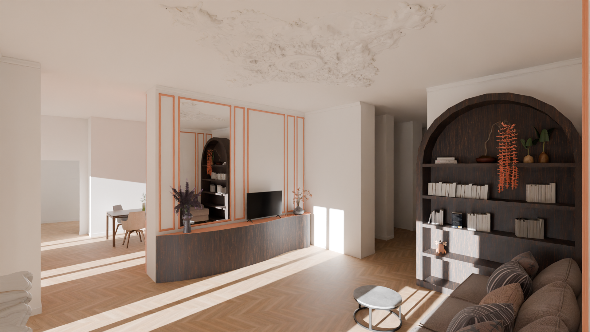
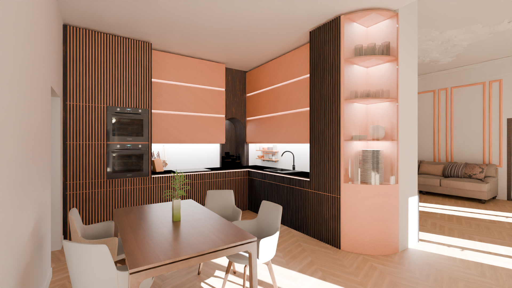
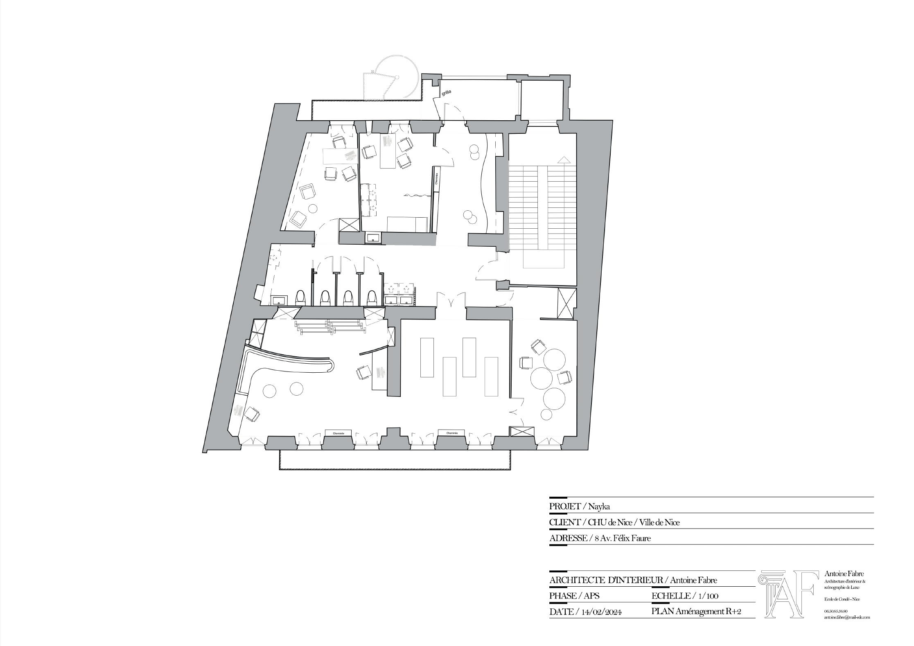
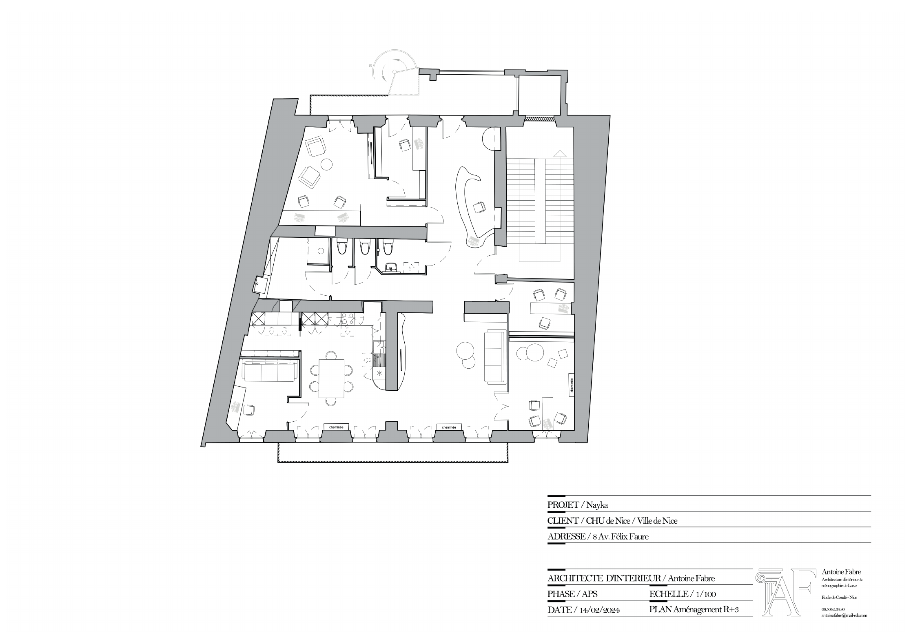
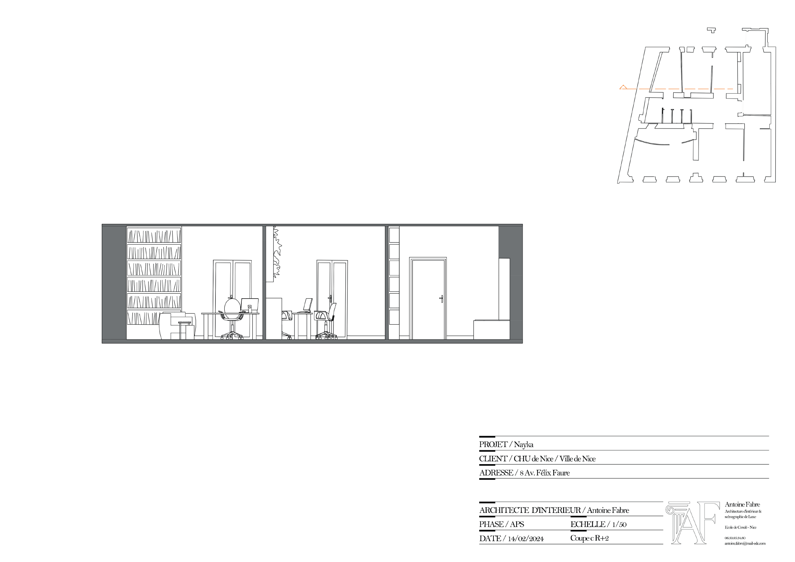
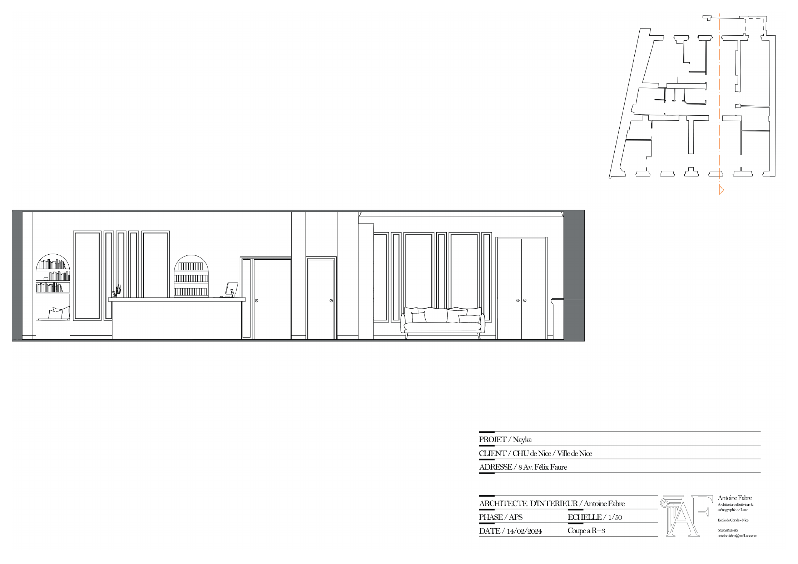
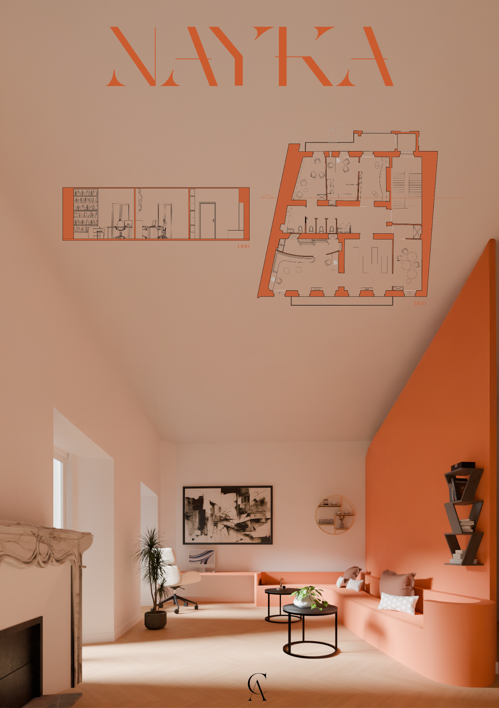

Mettre en sécurité
Des circulations lisibles, des espaces enfants protégés et des dispositifs d’alerte intégrés répondent aux besoins de sûreté sans transformer le lieu en espace défensif.
Créer un refuge discret et bienveillant où les femmes et leurs enfants peuvent être accueillis, protégés et accompagnés sans renoncer à la chaleur d’un lieu de vie.

Nayka répond à un besoin de protection, d’écoute et de reconstruction. Le projet ne cherche pas à reproduire l’image froide d’une structure administrative : il propose un cadre doux, lisible et digne, capable d’accompagner des situations de vulnérabilité.
Les espaces sont pensés pour les femmes, les enfants et les professionnels. Chacun doit pouvoir y trouver un degré adapté de confidentialité, d’autonomie et de calme.
Le Yakisugi, bois brûlé japonais, devient la matière symbolique du projet. Transformé par le feu, il évoque la résilience, la force retrouvée et la beauté qui peut émerger après l’épreuve.
Comment concevoir un refuge sécurisant sans produire un lieu fermé, anxiogène ou institutionnel ?
Le R+2 accueille les fonctions d’accompagnement, de consultation, de formation et de parentalité. Le R+3 est davantage consacré aux usages quotidiens : accueil, cuisine, repos, vie commune et bureaux.
Cette répartition distingue les temps de soin et de suivi des moments plus domestiques, tout en maintenant des circulations simples.
Les moulures, fresques, cheminées et volumes historiques sont conservés comme des repères. Le projet intervient par contraste : lignes sobres, menuiseries sombres, lumière intégrée et nuances orangées viennent souligner l’existant plutôt que l’effacer.
La sécurité est présente partout, mais elle reste discrète pour préserver une sensation de normalité et de confiance.
L’architecture organise des seuils successifs entre accueil, écoute, soin et vie collective. Les espaces ouverts encouragent la rencontre, tandis que des pièces plus protégées permettent de se reposer, de parler ou de recevoir un accompagnement confidentiel.
Des circulations lisibles, des espaces enfants protégés et des dispositifs d’alerte intégrés répondent aux besoins de sûreté sans transformer le lieu en espace défensif.
Une palette cohérente, des usages clairement identifiés et des lieux de retrait offrent un cadre stable et rassurant aux femmes comme aux enfants.
La cuisine, les espaces communs, les salles de formation et les bureaux permettent de se reconstruire au quotidien, seul ou avec les autres.
Le niveau regroupe les consultations, les entretiens confidentiels, la formation et les espaces dédiés à la parentalité. Les fonctions médicales restent identifiables mais sont intégrées à une ambiance domestique.
La cuisine, la salle de vie commune et les espaces de repos recréent les repères d’un foyer. Les bureaux sont séparés des lieux collectifs afin de préserver le calme et la confidentialité.

Le desk ne forme pas une barrière : sa géométrie adoucie accompagne l’entrée, permet l’échange et marque le passage vers un espace protégé.


Matière manifeste
Le Yakisugi est utilisé sur les éléments structurants du mobilier et les menuiseries principales. Son noir profond ancre l’espace et crée un contraste avec les tons clairs de l’existant.
Une couleur de chaleur, de guérison et de renaissance, utilisée pour donner de l’énergie sans rompre la sensation de protection.
Des nuances liées à la terre et au foyer, qui apportent stabilité, profondeur et ancrage.
Une base lumineuse qui préserve la douceur des moulures et agrandit visuellement les pièces.
Des lignes lumineuses soulignent les menuiseries et rendent les espaces plus lisibles, notamment à l’accueil et dans la cuisine.
Ajoutez ici les photographies de la maquette de Nayka : vue d’ensemble, détail de fabrication et mise en situation.


Les séquences vidéo permettent de comprendre les transitions entre accueil, attente, repos et vie commune. Elles complètent les images fixes par une lecture à hauteur d’usager.
Une introduction au langage spatial du projet et à son identité chromatique.
Découvrir les banquettes, niches et espaces de retrait.
Un espace calme où la lumière et le mobilier accompagnent la pause.
Une séquence plus longue autour des lieux de rencontre et de partage.
Les plans articulent la confidentialité des entretiens, la sécurité des enfants et la fluidité des espaces communs sur deux niveaux complémentaires.
Le projet conserve les structures et éléments patrimoniaux majeurs tout en intervenant sur les distributions, le mobilier intégré, les ambiances et la mise en sécurité.




Planche de synthèse


Architecture tropicale

Lieu de soin

Plans & détails